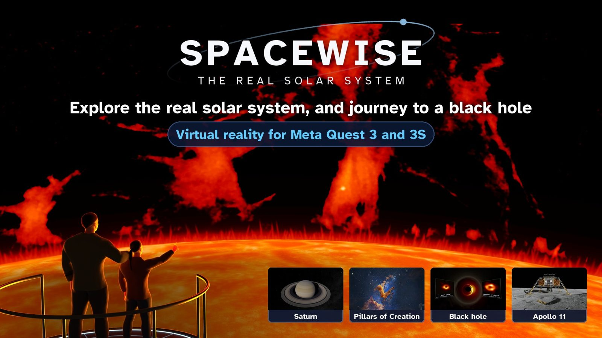
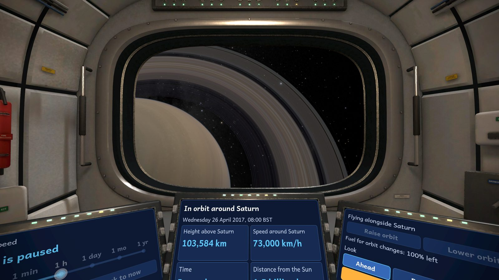
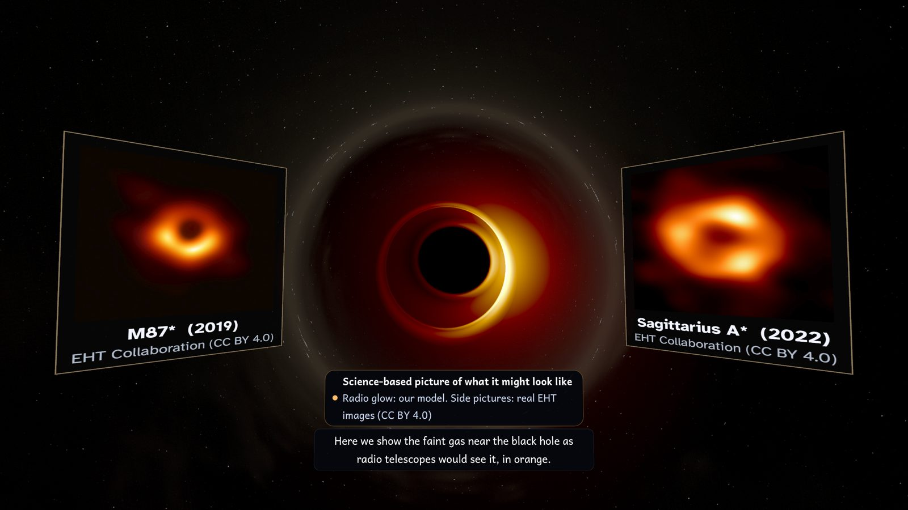
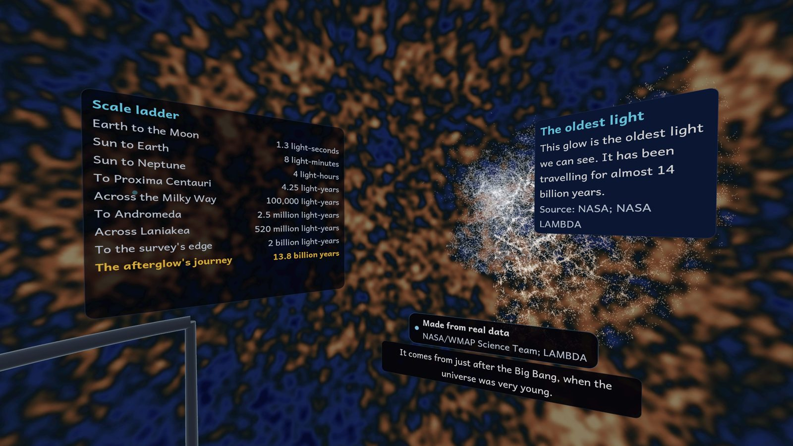
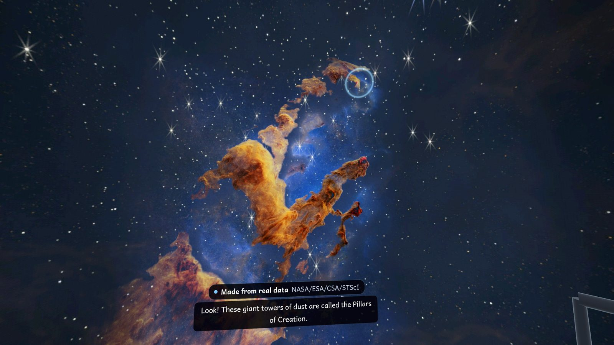

Press kit
SpaceWise: The Real Solar System is a learning app for Meta Quest 3 and 3S. It shows the real solar system at its true size and in true time, with nine narrated Journeys. It labels every scene as a real image, made from real data, a model or a science-based picture.
SpaceWise on the Meta Horizon Store
Facts
| Name | SpaceWise: The Real Solar System |
| Developer | dav3studios, a solo studio in the United Kingdom |
| Platform | Meta Quest 3 and Meta Quest 3S |
| Released | 2 November 2026, on the Meta Horizon Store |
| Version | 0.2.1 |
| Price | GBP 7.99 and USD 7.99. The store shows the price for each country. |
| Ages | 10 and up. The store age group is Mixed Ages. |
| Play | Seated or standing, with Touch controllers. Teleport and snap turn. |
| Data | No ads, no chat, no accounts and no in-app purchases. The app collects the user ID and the age group of the Meta account, and keeps them and the progress on the headset. It works offline. |
The short version
SpaceWise puts the real solar system round the player at its true size, where every planet is today. Nine narrated Journeys go from a mountaintop observatory to the edge of a spinning black hole. One continuous flight goes from Earth orbit to the afterglow of the Big Bang. Players can choose any date from 3000 BC to AD 3000 and find every solar and lunar eclipse in that range. They can stand on the ground inside an eclipse, at its real place and time. Four reading depths go from quick facts to expert science, so a 10-year-old and a parent can use the same app.
What makes it different
- Honest labels. Every Journeys scene says what it is: a real image, made from real data, a model built to real measurements, or a science-based picture. Every fact names its source.
- Real data. The planets come from JPL's orbital elements. The eclipses are computed in the app and checked against NASA's Five Millennium Canon of Eclipses. Over 41,000 asteroids come from the NASA/JPL Small-Body Database. The solar flare is the X9.0 flare of 3 October 2024, filmed by NASA's Solar Dynamics Observatory.
- Real places. Walk at Tranquility Base, in Jezero Crater, beside Curiosity on Mount Sharp and beside Viking 1. Glide past Saturn's rings on the path of Cassini's dive of 26 April 2017.
- For families, schools and museums. Up to six explorers on one headset, with no names or accounts. School mode has a teacher PIN and links to the English National Curriculum. Kiosk mode runs short, unattended visits for museums, libraries and science centres.
Pictures and video
Every screenshot is an untouched render from the app.






To download a picture, open it and save it. The pictures on this page are 1600 pixels wide. For the full-size screenshots (2560 by 1440), the trailer (1920 by 1080) or short vertical videos, email us.
Store keys and contact
We are glad to give a free store key to writers, video makers, teachers and museums who want to try the app. The email address is on the Help page. We reply within 5 working days.
When you write about SpaceWise, please do not say that NASA, ESA or Meta endorse it. They do not. NASA and ESA pictures are credited on the Open licences page.